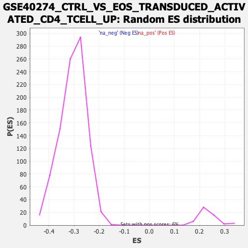

| | | Dataset | DE_genes2 |
| Phenotype | NoPhenotypeAvailable |
| Upregulated in class | na_neg |
| GeneSet | GSE40274_CTRL_VS_EOS_TRANSDUCED_ACTIVATED_CD4_TCELL_UP |
| Enrichment Score (ES) | -0.6848912 |
| Normalized Enrichment Score (NES) | -2.2545247 |
| Nominal p-value | 0.0 |
| FDR q-value | 0.0 |
| FWER p-Value | 0.0 |
Table: GSEA Results Summary
 Fig 1: Enrichment plot: GSE40274_CTRL_VS_EOS_TRANSDUCED_ACTIVATED_CD4_TCELL_UP
Fig 1: Enrichment plot: GSE40274_CTRL_VS_EOS_TRANSDUCED_ACTIVATED_CD4_TCELL_UP
Profile of the Running ES Score & Positions of GeneSet Members on the Rank Ordered List
| PROBE | GENE SYMBOL | GENE_TITLE | RANK IN GENE LIST | RANK METRIC SCORE | RUNNING ES | CORE ENRICHMENT | | 1 | DUSP16 | | | 178 | 5.211 | -0.0006 | No |
| 2 | SEMA4F | | | 377 | 4.090 | -0.0046 | No |
| 3 | ATP13A2 | | | 672 | 3.266 | -0.0161 | No |
| 4 | DPCD | | | 708 | 3.192 | -0.0120 | No |
| 5 | ATP1B1 | | | 919 | 2.845 | -0.0192 | No |
| 6 | ADRB2 | | | 982 | 2.755 | -0.0175 | No |
| 7 | SMPDL3B | | | 1257 | 2.411 | -0.0295 | No |
| 8 | KCTD13 | | | 1339 | 2.325 | -0.0298 | No |
| 9 | HID1 | | | 1376 | 2.291 | -0.0275 | No |
| 10 | PACSIN2 | | | 1498 | 2.179 | -0.0306 | No |
| 11 | CNNM2 | | | 1536 | 2.146 | -0.0286 | No |
| 12 | ADAMTS14 | | | 1582 | 2.104 | -0.0272 | No |
| 13 | SH3BGRL3 | | | 1593 | 2.098 | -0.0237 | No |
| 14 | CASP7 | | | 1606 | 2.083 | -0.0203 | No |
| 15 | GNS | | | 1670 | 2.020 | -0.0202 | No |
| 16 | STARD10 | | | 1694 | 1.996 | -0.0177 | No |
| 17 | CDK2AP1 | | | 1742 | 1.957 | -0.0167 | No |
| 18 | NAGA | | | 1754 | 1.949 | -0.0135 | No |
| 19 | BHLHE40 | | | 1944 | 1.796 | -0.0215 | No |
| 20 | GZMA | | | 2095 | 1.687 | -0.0273 | No |
| 21 | MAP3K8 | | | 2097 | 1.686 | -0.0241 | No |
| 22 | LGALS3 | | | 2175 | 1.635 | -0.0255 | No |
| 23 | SUMF1 | | | 2317 | 1.551 | -0.0311 | No |
| 24 | CREB3L2 | | | 2515 | 1.435 | -0.0403 | No |
| 25 | IFNGR1 | | | 2819 | 1.277 | -0.0563 | No |
| 26 | ITGAM | | | 3608 | 0.967 | -0.1024 | No |
| 27 | NRARP | | | 3895 | 0.869 | -0.1182 | No |
| 28 | PDE4A | | | 3926 | 0.859 | -0.1183 | No |
| 29 | IKZF3 | | | 3987 | 0.840 | -0.1203 | No |
| 30 | ESM1 | | | 4045 | 0.823 | -0.1222 | No |
| 31 | ALDOC | | | 4408 | 0.717 | -0.1429 | No |
| 32 | CDC20B | | | 4505 | 0.692 | -0.1474 | No |
| 33 | SPAG1 | | | 5204 | 0.518 | -0.1890 | No |
| 34 | RNASEK | | | 5226 | 0.512 | -0.1892 | No |
| 35 | PLCG2 | | | 5511 | 0.448 | -0.2057 | No |
| 36 | ZMIZ1 | | | 5659 | 0.414 | -0.2138 | No |
| 37 | FRY | | | 5712 | 0.402 | -0.2162 | No |
| 38 | EPAS1 | | | 5899 | 0.365 | -0.2268 | No |
| 39 | PRDM1 | | | 6019 | 0.342 | -0.2334 | No |
| 40 | DAPK2 | | | 6161 | 0.314 | -0.2414 | No |
| 41 | FGL2 | | | 6344 | 0.277 | -0.2520 | No |
| 42 | ARSB | | | 6395 | 0.264 | -0.2545 | No |
| 43 | SP100 | | | 6519 | 0.240 | -0.2615 | No |
| 44 | ITGA2 | | | 6887 | 0.173 | -0.2836 | No |
| 45 | STMN1 | | | 7057 | 0.145 | -0.2936 | No |
| 46 | SLC43A3 | | | 7433 | 0.076 | -0.3164 | No |
| 47 | TCF19 | | | 7598 | 0.049 | -0.3263 | No |
| 48 | ARL6IP4 | | | 7613 | 0.045 | -0.3271 | No |
| 49 | IL12RB2 | | | 7989 | -0.010 | -0.3499 | No |
| 50 | SESN2 | | | 8299 | -0.056 | -0.3687 | No |
| 51 | CHSY1 | | | 8651 | -0.120 | -0.3899 | No |
| 52 | ANXA1 | | | 8670 | -0.124 | -0.3907 | No |
| 53 | LRRK1 | | | 8790 | -0.150 | -0.3977 | No |
| 54 | GALNT3 | | | 8850 | -0.161 | -0.4010 | No |
| 55 | DUSP5 | | | 9232 | -0.250 | -0.4237 | No |
| 56 | APOBEC2 | | | 9509 | -0.315 | -0.4400 | No |
| 57 | ERN1 | | | 9655 | -0.355 | -0.4481 | No |
| 58 | AK3 | | | 9917 | -0.433 | -0.4632 | No |
| 59 | FOSL2 | | | 10062 | -0.477 | -0.4710 | No |
| 60 | SPRY2 | | | 10359 | -0.572 | -0.4880 | No |
| 61 | MID1IP1 | | | 10419 | -0.592 | -0.4904 | No |
| 62 | CTU2 | | | 10713 | -0.694 | -0.5069 | No |
| 63 | PON3 | | | 10800 | -0.726 | -0.5107 | No |
| 64 | SLC48A1 | | | 10818 | -0.735 | -0.5103 | No |
| 65 | LAT2 | | | 10847 | -0.742 | -0.5106 | No |
| 66 | PLCH1 | | | 11080 | -0.835 | -0.5231 | No |
| 67 | ERP44 | | | 11106 | -0.844 | -0.5230 | No |
| 68 | RAPH1 | | | 11331 | -0.940 | -0.5348 | No |
| 69 | PDE8A | | | 11518 | -1.013 | -0.5441 | No |
| 70 | ARHGDIG | | | 11760 | -1.113 | -0.5566 | No |
| 71 | C4orf46 | | | 11799 | -1.133 | -0.5567 | No |
| 72 | ZEB2 | | | 11823 | -1.141 | -0.5559 | No |
| 73 | F2R | | | 11869 | -1.161 | -0.5563 | No |
| 74 | GPX8 | | | 12142 | -1.298 | -0.5704 | No |
| 75 | STIL | | | 12207 | -1.330 | -0.5717 | No |
| 76 | VKORC1L1 | | | 12209 | -1.331 | -0.5691 | No |
| 77 | CDKN2C | | | 12251 | -1.351 | -0.5689 | No |
| 78 | E2F2 | | | 12533 | -1.492 | -0.5832 | No |
| 79 | OXR1 | | | 12658 | -1.569 | -0.5876 | No |
| 80 | ITGA1 | | | 12713 | -1.593 | -0.5878 | No |
| 81 | RAP1B | | | 12997 | -1.768 | -0.6016 | No |
| 82 | KIF22 | | | 13043 | -1.792 | -0.6008 | No |
| 83 | POLD1 | | | 13115 | -1.833 | -0.6015 | No |
| 84 | KLRG1 | | | 13683 | -2.227 | -0.6317 | No |
| 85 | ELOVL7 | | | 13963 | -2.468 | -0.6439 | No |
| 86 | ASF1B | | | 14048 | -2.550 | -0.6440 | No |
| 87 | MASTL | | | 14448 | -2.933 | -0.6626 | No |
| 88 | MYBL1 | | | 14708 | -3.250 | -0.6720 | No |
| 89 | CDCA3 | | | 14921 | -3.539 | -0.6779 | Yes |
| 90 | RACGAP1 | | | 14957 | -3.580 | -0.6730 | Yes |
| 91 | TACC3 | | | 15038 | -3.698 | -0.6706 | Yes |
| 92 | CENPI | | | 15122 | -3.810 | -0.6681 | Yes |
| 93 | CMSS1 | | | 15138 | -3.832 | -0.6615 | Yes |
| 94 | CDCA8 | | | 15225 | -3.955 | -0.6589 | Yes |
| 95 | SNX5 | | | 15253 | -4.019 | -0.6527 | Yes |
| 96 | SPAG5 | | | 15339 | -4.181 | -0.6496 | Yes |
| 97 | TBC1D31 | | | 15369 | -4.240 | -0.6430 | Yes |
| 98 | KLHL15 | | | 15382 | -4.261 | -0.6353 | Yes |
| 99 | CDCA5 | | | 15393 | -4.273 | -0.6275 | Yes |
| 100 | RAD54L | | | 15435 | -4.365 | -0.6214 | Yes |
| 101 | GEN1 | | | 15480 | -4.447 | -0.6153 | Yes |
| 102 | CIT | | | 15547 | -4.578 | -0.6103 | Yes |
| 103 | CDC25C | | | 15648 | -4.802 | -0.6070 | Yes |
| 104 | KNTC1 | | | 15665 | -4.846 | -0.5984 | Yes |
| 105 | TMEM170A | | | 15725 | -4.953 | -0.5922 | Yes |
| 106 | BIRC5 | | | 15741 | -4.998 | -0.5833 | Yes |
| 107 | NASP | | | 15792 | -5.106 | -0.5763 | Yes |
| 108 | RB1 | | | 15805 | -5.145 | -0.5669 | Yes |
| 109 | CDK1 | | | 15810 | -5.156 | -0.5569 | Yes |
| 110 | NCAPH | | | 15843 | -5.247 | -0.5485 | Yes |
| 111 | TPX2 | | | 15859 | -5.288 | -0.5390 | Yes |
| 112 | GTSE1 | | | 16026 | -5.744 | -0.5378 | Yes |
| 113 | DCLRE1A | | | 16034 | -5.780 | -0.5269 | Yes |
| 114 | MAD2L1 | | | 16043 | -5.805 | -0.5159 | Yes |
| 115 | TRAF3IP1 | | | 16046 | -5.809 | -0.5046 | Yes |
| 116 | SNX10 | | | 16053 | -5.823 | -0.4935 | Yes |
| 117 | ECT2 | | | 16082 | -5.906 | -0.4835 | Yes |
| 118 | KIF18B | | | 16087 | -5.923 | -0.4721 | Yes |
| 119 | PRC1 | | | 16103 | -5.960 | -0.4612 | Yes |
| 120 | SKA3 | | | 16116 | -5.989 | -0.4502 | Yes |
| 121 | AURKB | | | 16120 | -6.007 | -0.4385 | Yes |
| 122 | SPC25 | | | 16131 | -6.050 | -0.4272 | Yes |
| 123 | BUB1 | | | 16142 | -6.084 | -0.4158 | Yes |
| 124 | HSPA4L | | | 16181 | -6.270 | -0.4058 | Yes |
| 125 | DTL | | | 16230 | -6.481 | -0.3959 | Yes |
| 126 | FIGNL1 | | | 16248 | -6.548 | -0.3840 | Yes |
| 127 | ESCO2 | | | 16342 | -7.133 | -0.3756 | Yes |
| 128 | UBXN2B | | | 16346 | -7.197 | -0.3616 | Yes |
| 129 | KIF23 | | | 16347 | -7.203 | -0.3474 | Yes |
| 130 | ANLN | | | 16350 | -7.214 | -0.3333 | Yes |
| 131 | CCNA2 | | | 16376 | -7.439 | -0.3202 | Yes |
| 132 | GOLIM4 | | | 16378 | -7.455 | -0.3055 | Yes |
| 133 | NUF2 | | | 16382 | -7.475 | -0.2910 | Yes |
| 134 | CLSPN | | | 16384 | -7.528 | -0.2762 | Yes |
| 135 | CDCA2 | | | 16385 | -7.530 | -0.2613 | Yes |
| 136 | KIF11 | | | 16409 | -7.860 | -0.2472 | Yes |
| 137 | NEIL3 | | | 16430 | -8.045 | -0.2326 | Yes |
| 138 | SHCBP1 | | | 16441 | -8.157 | -0.2171 | Yes |
| 139 | TTK | | | 16444 | -8.189 | -0.2011 | Yes |
| 140 | KIF15 | | | 16449 | -8.254 | -0.1851 | Yes |
| 141 | DLGAP5 | | | 16482 | -9.145 | -0.1690 | Yes |
| 142 | MKI67 | | | 16483 | -9.193 | -0.1509 | Yes |
| 143 | TOP2A | | | 16497 | -9.873 | -0.1322 | Yes |
| 144 | KIF18A | | | 16499 | -9.952 | -0.1126 | Yes |
| 145 | KIF14 | | | 16503 | -10.060 | -0.0930 | Yes |
| 146 | DEPDC1 | | | 16522 | -11.603 | -0.0712 | Yes |
| 147 | CKAP2L | | | 16526 | -11.804 | -0.0481 | Yes |
| 148 | NDC80 | | | 16527 | -12.233 | -0.0240 | Yes |
| 149 | HMMR | | | 16528 | -12.240 | 0.0002 | Yes |
Table: GSEA details [plain text format]

Fig 2: GSE40274_CTRL_VS_EOS_TRANSDUCED_ACTIVATED_CD4_TCELL_UP: Random ES distribution
Gene set null distribution of ES for GSE40274_CTRL_VS_EOS_TRANSDUCED_ACTIVATED_CD4_TCELL_UP